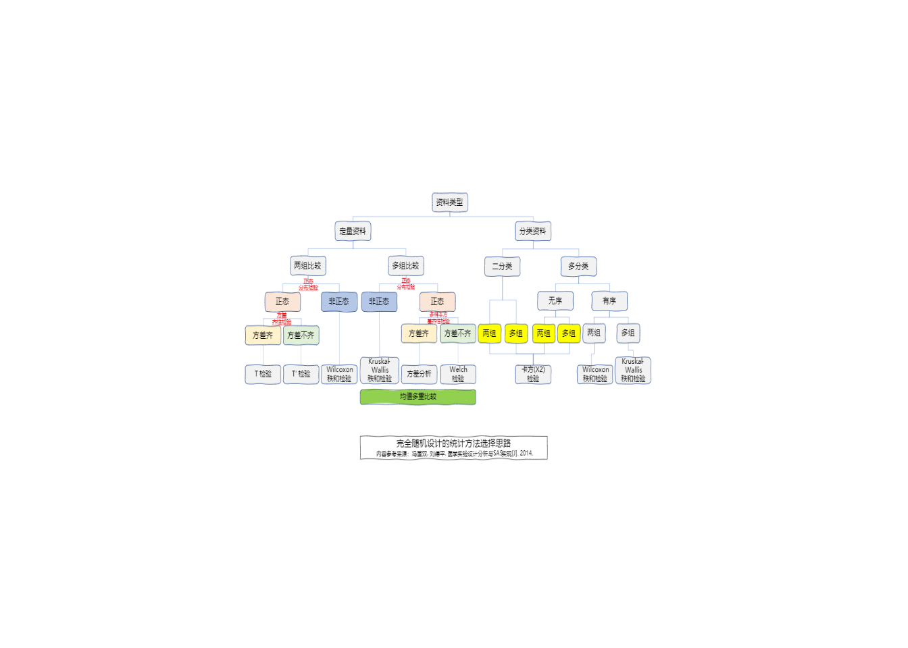

医学统计学与R语言
2021-07-04
第 1 章 简介
这份笔记主要是我个人在学习孙振球，徐勇勇老师的<<医学统计学>> 第4版的过程中，尽量使用编程语言R对书中的示例进行实现的记录， 并用Bookdown形成的。
#<<医学统计学>> 孙振球, 徐勇勇. 第4版[M]. 人民卫生出版社, 2014.虽然在学习，整理过程中尽量将笔记的形式，内容结构进行力所能及的梳理，这里要特别感谢在学习过程中，在网络上找到的一些参考资料带来的帮助，然后将一些 示例与原书进行对照，以避免一些学习错误，但个人能力和精力实在有限，也容易会有理解不当，表述错误的情况， 如果您在参考的过程中，发现了这样的错误，请您尽量可以告诉我，我会确认并努力修正，如果您对文档有疑问或建议，都可以邮件告知我。在学习过程中受wxhyihuan前辈的启发并参考了他的部分学习笔记
建议您购买原版教材结合本笔记学习，您也可以在网络上找到电子书方便参考，如需求电子版可邮件联系作者。
bookdown 包可以从CRAN 或 Github安装:
install.packages("bookdown")
# or the development version
# devtools::install_github("rstudio/bookdown")1.1 软件准备
本文档使用到的主要软件 R version 4.1.0 (2021-05-18) – “Camp Pontanezen,” 和 RStudio 版本是 1.4.1717.
如果您R语言的新手，您可以在下面找到一些快速上手的学习资料：
2.R Markdown: The Definitive Guide
sessionInfo()## R version 4.1.0 (2021-05-18)
## Platform: x86_64-w64-mingw32/x64 (64-bit)
## Running under: Windows 10 x64 (build 19041)
##
## Matrix products: default
##
## locale:
## [1] LC_COLLATE=Chinese (Simplified)_China.936
## [2] LC_CTYPE=Chinese (Simplified)_China.936
## [3] LC_MONETARY=Chinese (Simplified)_China.936
## [4] LC_NUMERIC=C
## [5] LC_TIME=Chinese (Simplified)_China.936
##
## attached base packages:
## [1] stats graphics grDevices utils datasets methods base
##
## other attached packages:
## [1] png_0.1-7 jpeg_0.1-8.1
##
## loaded via a namespace (and not attached):
## [1] bookdown_0.22 digest_0.6.27 magrittr_2.0.1 evaluate_0.14
## [5] highr_0.9 rlang_0.4.11 stringi_1.6.1 rstudioapi_0.13
## [9] rmarkdown_2.9 tools_4.1.0 stringr_1.4.0 xfun_0.24
## [13] yaml_2.2.1 compiler_4.1.0 htmltools_0.5.1.1 knitr_1.33

图 1.1: 完全随机设计的统计方法选择思路
1.2 致谢
谨以此书献给我的导师范老师！
1.3 声明
为方便使用，本书保留源代码，如有任何问题请联系作者 921818611@qq.com。